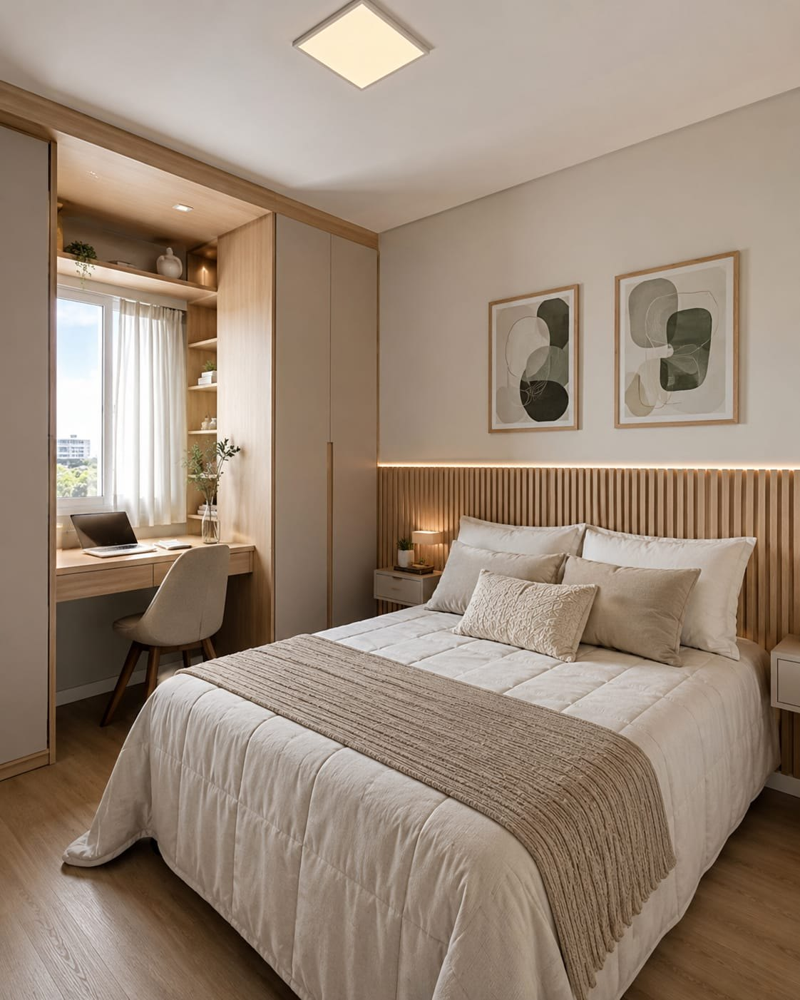
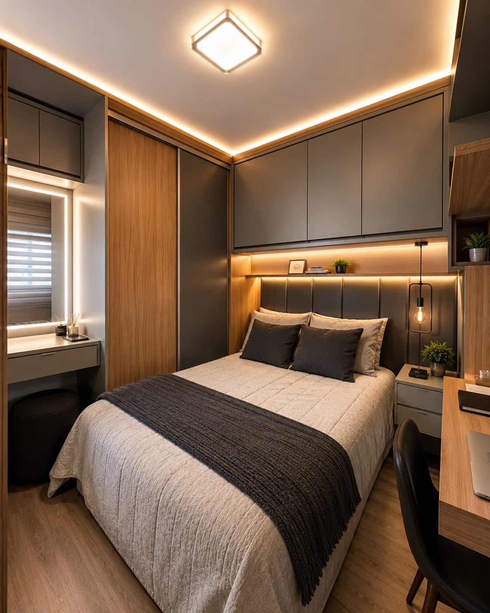
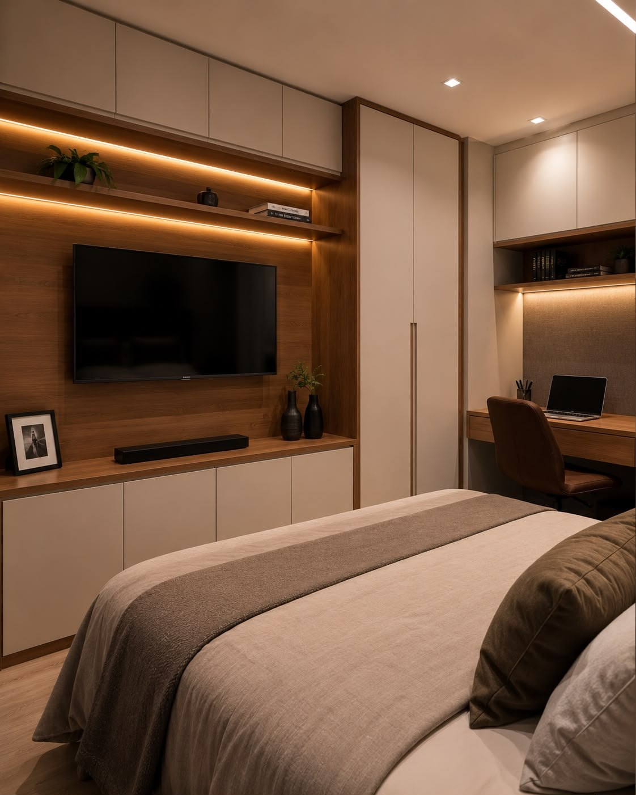
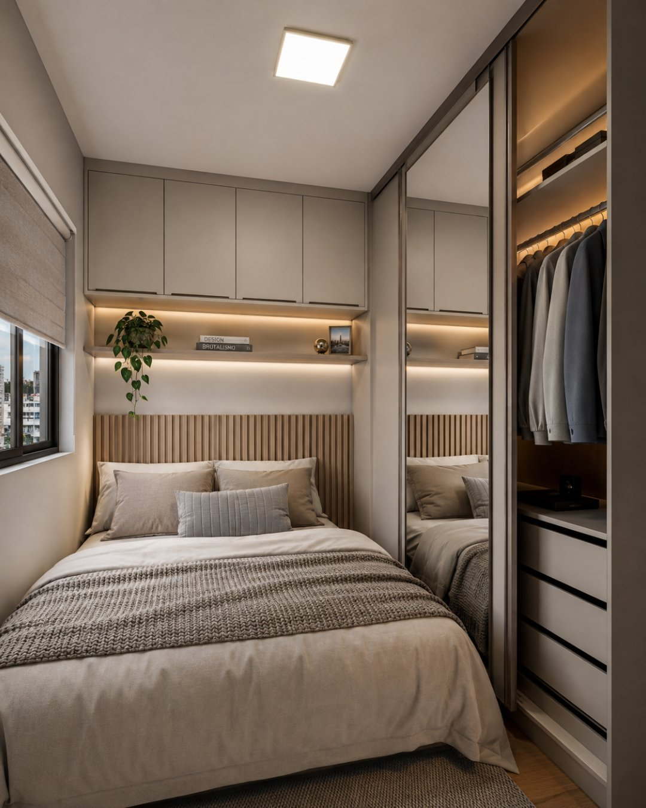

Guarda-roupas até o teto, closets organizados por tipo de peça e painéis que integram cama, criados e armários — desenhados a partir das medidas reais do seu quarto.
Projetos personalizados · MDF · Atendimento em Londrina, Cambé e região

Do rodapé ao teto
Sem vão morto em cima do armário nem espaço perdido nas laterais.
Interno definido por você
Cabides, gavetas e prateleiras na proporção do que você realmente tem.
Marcenaria contínua
Armário, painel e criados desenhados como um único conjunto.
Londrina, Cambé e região
Medição, produção e instalação com acompanhamento próximo.
O ponto de partida
Seu quarto precisa de mais do que um guarda-roupa
O quarto acumula funções: dormir, guardar, se arrumar, às vezes trabalhar. Quando só um armário é encaixado no espaço que sobrou, o resto do ambiente fica desorganizado e a circulação perde qualidade.
Armário dimensionado pela quantidade real de roupa — não pelo módulo padrão de loja.
Cabeceira, criados e painel de TV integrados, liberando piso e facilitando a limpeza.
Iluminação interna e espelho posicionados onde você realmente se arruma.


Espaço reduzido
Quarto pequeno? O projeto certo faz diferença.
Em quarto compacto, cada decisão de projeto aparece no resultado. O ganho não vem de forçar mais móveis no ambiente, e sim de escolher o tipo certo de abertura, altura e profundidade.
Portas de correr
Nada de porta abrindo sobre a cama ou a circulação.
Profundidade reduzida
Módulos mais rasos com cabideiro adaptado quando o espaço exige.
Altura total
Maleiro até o teto para o que se usa poucas vezes por ano.
Cores e reflexos
Tons claros e espelho usados com critério para ampliar a percepção.
Closets
Um closet pensado para a sua rotina
Antes de desenhar, levantamos o que você guarda: quantos cabides longos e curtos, quantas gavetas, calçados, bolsas e peças de uso diário. O closet é organizado a partir dessa lista.
Cabides longos e curtos
Alturas separadas para vestidos, casacos, camisas e calças, sem peça amassada.
Gaveteiro interno
Gavetas na altura da mão para o uso diário e mais fundas para o que se guarda.
Calçados e bolsas
Prateleiras inclinadas ou nichos dimensionados pelo que você tem hoje.
Iluminação por módulo
LED nas prateleiras e cabideiros para enxergar a cor real da roupa.
Frentes abertas ou de vidro
Combinação entre o que fica à mostra e o que fica fechado e protegido de poeira.
Espelho e área de se arrumar
Ponto definido no projeto, com espaço de circulação para abrir portas e gavetas.
Comparativo
Guarda-roupa planejado ou sob medida?
Na prática, o que muda é o ponto de partida: um parte de módulos prontos combinados entre si, o outro parte do seu ambiente.
Móvel pronto / modulado
Parte de módulos com medidas fixas.
Sobra vão no teto e nas laterais.
Interno padrão, igual para qualquer pessoa.
Cantos e colunas viram espaço perdido.
Acabamento limitado ao catálogo do módulo.
Sob medida Vila Fonseca
Parte das medidas reais do seu quarto.
Fecha do rodapé ao teto, sem vão morto.
Interno definido pelo que você guarda.
Cantos e recuos resolvidos no desenho.
Acabamento e ferragens escolhidos item por item.
Projetos
Referências de quarto e closet para inspirar o seu
Composições que mostram combinações de acabamento, marcenaria e iluminação que trabalhamos. Fotografias dos projetos executados serão publicadas nesta seção.

Imagem conceitual
Suíte compacta
Closet com armário espelhado e cama planejada
Cabeceira ripada, armário com porta espelhada e closet lateral integrado ao quarto.
Portas de correr desalinhadas e gavetas que travam são o problema mais comum em armário de quarto. É nas ferragens e no acabamento interno que a diferença aparece depois de alguns anos de uso.
01
Sistemas de porta de correr
Trilho e roldanas dimensionados pelo peso real da porta, com deslize leve.
02
Dobradiças com amortecimento
Fechamento silencioso — importante em quarto, onde o barulho incomoda.
03
Corrediças de gaveta
Abertura total e capacidade adequada, inclusive nas gavetas mais fundas.
04
Cabideiros e acessórios
Barras, porta-calças, porta-gravatas e divisores conforme o uso.
05
Iluminação interna
LED com acionamento por sensor ou interruptor, integrado à marcenaria.
Materiais
Acabamentos que combinam com o descanso
No quarto, o acabamento pesa mais na sensação do ambiente do que em qualquer outro cômodo. Definimos frentes, painel e iluminação com amostras físicas antes de produzir.
Branco fosco
Off-white quente
Madeira clara natural
Nogueira
Capuccino fosco
Grafite fosco
Verde profundo
Vidro fumê
Amostras ilustrativas. A cor final é conferida em amostra física antes da produção.
Como funciona
Do primeiro contato ao projeto pronto
01
Contato
Você envia o ambiente, as medidas aproximadas e o prazo pelo WhatsApp.
02
Entendimento do ambiente
Levantamos o que precisa ser guardado: cabides, gavetas, calçados e uso diário.
03
Desenvolvimento
Desenhamos módulos, alturas e tipo de abertura e ajustamos junto com você.
04
Materiais e detalhes
Definição de frentes, painel, espelho, ferragens e iluminação com amostras.
05
Produção
Corte, usinagem e montagem seguindo exatamente o projeto aprovado.
06
Instalação
Montagem no local, alinhamento das portas e regulagem das gavetas.
Dúvidas frequentes
Perguntas comuns sobre quartos e closets
No modulado, módulos de medidas fixas são combinados e o que não encaixa vira vão. No sob medida, o armário nasce das medidas do seu quarto: fecha do rodapé ao teto, contorna colunas e tem o interno definido pelo que você guarda.
Em quarto estreito, a porta de correr costuma ser a melhor escolha, porque não invade a circulação nem bate na cama. Em quarto com espaço à frente do armário, a porta de abrir dá visão total do interior de uma vez.
Em muitos casos sim, usando uma parede inteira com módulos abertos e menor profundidade, ou aproveitando um recuo já existente. Avaliamos na medição se compensa closet aberto ou armário fechado.
Sim. Fazer o conjunto no mesmo projeto é o que garante alinhamento de alturas, continuidade do acabamento e um ambiente que lê como uma peça só.
Sim, e é o que mais recomendamos. O trecho superior vira maleiro para o que se usa poucas vezes por ano e elimina o vão que acumula poeira em cima do móvel.
Envie pelo WhatsApp as medidas aproximadas do quarto, o que precisa ser guardado e o prazo que você tem em mente. Retornamos com uma estimativa de preço, sem compromisso.
Área de atendimento
Atendimento em Londrina, Cambé e região
Medição, produção e instalação com acompanhamento próximo, nessas cidades e região.
Orçamento sem compromisso
Conte como é o seu quarto hoje
Envie as medidas aproximadas do ambiente, o que precisa ser guardado e o prazo que você tem em mente. Respondemos com uma estimativa de preço competitivo, sem compromisso.